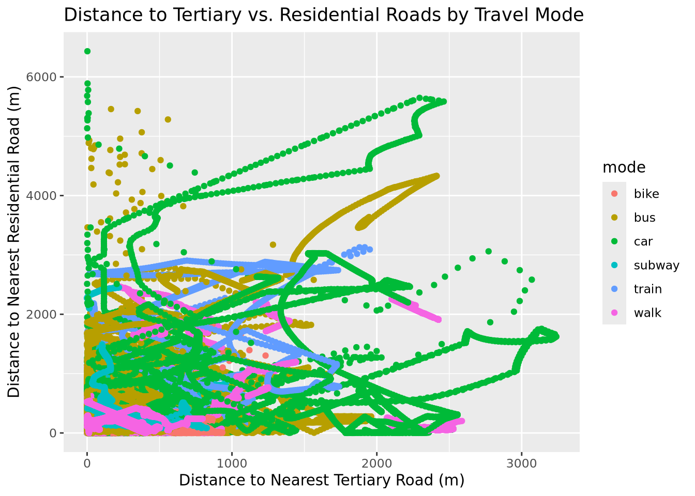
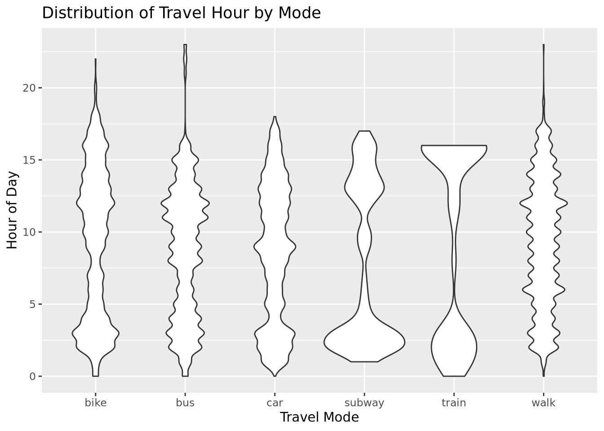

── Conflicts ────────────────────────────────────────── tidyverse_conflicts() ──
✖ dplyr::filter() masks stats::filter()
✖ dplyr::lag() masks stats::lag()
ℹ Use the conflicted package (<http://conflicted.r-lib.org/>) to force all conflicts to become errors
Attaching package: 'zoo'
The following objects are masked from 'package:base':
as.Date, as.Date.numeric
library(vip)
Attaching package: 'vip'
The following object is masked from 'package:utils':
vi
Own attempt
With the above example at hand, it is now my goal to build a predictor that produces a classifier on the per point basis. For this I will additionally rely on utilities of the tidymodels package.
Loading Data
For loading the data, the code from the example can be reused
training_dataset <-read_sf("data/tracks_1.gpkg", layer ="training") %>%mutate(data ="training") # load in the training layertesting_dataset <-read_sf("data/tracks_1.gpkg", layer ="testing") %>%mutate(data ="testing") # load in testing layervalidation_dataset <-read_sf("data/tracks_1.gpkg", layer ="validation") %>%mutate(data ="validation") # load in validation layerfull_dataset <-bind_rows(training_dataset, testing_dataset, validation_dataset) # combine to one sf object/data frame using row bind.
Feature Engineering
For feature engineering I will also include the velocity and the acceleration and sinuosity. I thought about the problem for a while and I could not come up with a beneficial new feature. So I will try to extend and improve the pipeline by focusing on modelselection and hyperparametertuning.
full_dataset_feautre_eng <- full_dataset %>%group_by(track_id) %>%# store datapoints with the same track ID as groupsmutate(steplength =as.numeric(st_distance(lead(geom), geom, by_element =TRUE)), # compute steplengthtimelag =as.numeric(difftime(lead(datetime), datetime, units ="secs")), # compute timelagspeed = steplength / timelag, # compute the velocityacceleration =lead(speed) - speed / timelag, # compute accelarationstraight_dist5 =as.numeric(st_distance(lead(geom, 5), geom, by_element =TRUE)), # then this sinuosity stufffull_dist5 =rollsum(steplength, 5, fill =NA, align ="left", ),sinuosity = full_dist5/straight_dist5, ) %>%ungroup() # remove the groups again
No Free Lunch Theorem - Choosing a model
In ML there is a important theorem that essentialy states, that there is no “best algorithm”. Different algorithms perform differently for different feature spaces and there is no “one beats all model”. Therefore it is important to test out different algoritms since it is not clear which one will perform best. This should in theory be done very explicitly, by also varying all the hyperparameter for every different algorithms. But like often in data science, there is a tention between computational resources and performance. Running hyperparameter tuning via a grid search combined with a cross validation is just to expensive in terms of execution time. So I am deploing a very greedy search here where I just run all the different models with their standart parameters and perform a 5-fold cross validation. This is a gready search as it will pick a good algorithm but not necessairly the best suited algorithm. KNN could for instance be much higher performing than random forest but it was just not discovered during the gready search as the standart hyperparameters of KNN are less suited than the standart hyperparameter of the random forest. (But very analogous to live, often a good solution is allready sufficient for the use case).
data_split <- full_dataset_feautre_eng %>% sf::st_drop_geometry() %>%# drop the geometrymutate(across(where(is.numeric), ~if_else(is.infinite(.), NA_real_, .))) %>%# if a dapapoint is inf, drop it (can happen in velocity and acceleration computation)drop_na() %>%# drop nasgroup_initial_split(., prop =0.75, group = track_id, strata = mode) # perform a grouped splitproduction_set <- data_split %>%training() # create a set for production (training and validation) will both be done in cross validationtesting_set <- data_split %>%testing() # create a set for testing at the very end.
Preparing recepie
In tidymodels a recepie can be defined that is performing the preproccessing. This recepie has the advantage, that it integrates into cross validation frameworkes. In a cross validation the complete preprocessing recepie is executed on the training folds, the model is trained on the training fold and lastly tested on the hold out fold. This is great as some preprocessing steps such as feature elimination based on correlation coefficients leak information into the testset otherwise. So the architecture of tidymodels forces a user to follow the goldstandart (which is neat I think). I also have to perform a train test split. I am using a grouped split here to make shure that points from the same movement track do not end up in different datasets. This, because datapoints from the same track are very similar just due their common origin which would inflate the performance metrics. Also I use a stratified split, to try to make shure that the relative proportions of the different transportation modes are the same for both splits. This is to make shure, that the transportation mode train for instance is not underrepresentated in the testing dataset.
The defined recepie is doing the following:
Droping predictors that suffer from multicolinearity with other predictors
scaling the remaining predictors into [0,1] range (as some models perform poorly in non scaled spaces)
rec <- production_set %>%select(!c(user_id, track_id, datetime, alt, data)) %>%# drop user id, track id datetime and other columns. These could leak unwanted informationrecipe(mode ~ ., .) %>%# predict mode as a function of the rest of the predictorsstep_corr(all_numeric_predictors(), threshold =0.75) %>%# drop correlated featuresstep_range(all_numeric_predictors(), min =0, max =1) # scale to 0 - 1 range
Defining models
tidymodels also features a uniform interface of a range of ML packages, that are implemented in R. With set_engine one can choose from which package the underlying algorithm should be adopted.
Then I am defining a workflow set. Here the classifiers get combined with the data processing recepie to workflows. Each of these workflows are then beeing executed in a 5-fold cross validatio to get robust performance metrics. The model that yields the best score, I will then pick.
# extrem gradient bossted treesxgb_model <-boost_tree(trees =500) %>%set_mode("classification") %>%set_engine("xgboost", device ="cuda", tree_method ="hist") # using gpu for very fast# good old logistic regressionlogistic_model <-multinom_reg(penalty =0.01) %>%set_mode("classification") %>%# set model to classifierset_engine("glmnet")# a decission treedt_model <-decision_tree() %>%set_mode("classification") %>%# set model to classifierset_engine("rpart")# combine into a workflow setwf_set <-workflow_set(preproc =list(rec = rec),models =list(xgb = xgb_model, logistic = logistic_model,dt = dt_model))# tune all of themresults <- wf_set %>%workflow_map(fn ="fit_resamples",resamples =group_vfold_cv(production_set, group = track_id, v =5, strata = mode) # I use a grouped cv for the same reason )rank_results(results, rank_metric ="accuracy") # display the results ranked by accuracy
Gradient Boosting has outclassed the others by a reasonable margin. So we gotta go with gradient boosted trees.
Continuing with xgboost
Next I will perform hyperparameter tuning for the xgboost algorithm aswell as for the recepie step. Namely, which threshold for multicolinearity to use is rather arbitrary and generally it is best to determine this empirically to. For hyperparameter tuning I will also deploy a nested cross validation. Hyperparameter tuning I use a simple grid search. To make training faster, I am using xgboost whith GPU suport. This is available, if the right xgboost binary is installed, the CUDA toolkit and drivers are installed and a CUDA GPU is available. (It takes a bit of thinkering to get it going).
# recepie stays the same except that the correlation threshold is left open for tuning.# this can be achieved with the tune() function.rec <- production_set %>%select(!c(user_id, track_id, datetime, alt, data)) %>%recipe(mode ~ ., .) %>%step_corr(all_numeric_predictors(), threshold =tune()) %>%step_range(all_numeric_predictors(), min =0, max =1)# the xgboost recepie also has the most influencial hyperparameters set to tunexgb_model <-boost_tree(trees =tune(),learn_rate =tune(),tree_depth =tune(),min_n =tune()) %>%set_engine("xgboost", device ="cuda",tree_method ="hist", nthread =8) %>%set_mode("classification")# this time a singular workflowwf <-workflow() %>%add_recipe(rec) %>%add_model(xgb_model)# nested 5-fold cross validation with a gridsearch over 10 samplesresults <- wf %>%tune_grid(resamples =group_vfold_cv(production_set,group = track_id, v =5,strata = mode),grid =10 )# show best accuracy and roc auc storesshow_best(results, metric ="accuracy")
With the best perfroming hyperparams, the model can now be trained and evluated on the testset
# Finalize workflow with best hyperparametersbest_params <-select_best(results, metric ="roc_auc")final_wf <-finalize_workflow(wf, best_params)# Fit on full production set, evaluate on test setfinal_fit <- final_wf %>%last_fit(data_split) # last fit trains the model on the train set and evaluates it on the testing set
→ A | warning: ✖ No observations were detected in `truth` for level: subway.
ℹ Computation will proceed by ignoring those levels.
There were issues with some computations A: x1
There were issues with some computations A: x1
As features I will adapt the proposed features form the task description and additionally design some more.
## compute the distance to railay and assign as new feature ##nearest_railway <-st_nearest_feature(full_dataset_feautre_eng, railway_data)railway_dist <-st_distance( full_dataset_feautre_eng, railway_data[nearest_railway, ],by_element =TRUE)full_dataset_feautre_eng$distance_to_railway <- railway_dist# drop thr railway dist from memory as it is quite largerm(railway_dist)gc()
used (Mb) gc trigger (Mb) max used (Mb)
Ncells 9023257 481.9 21295654 1137.4 21295654 1137.4
Vcells 66655984 508.6 148095278 1129.9 148095278 1129.9
Distances to road types
Pedestrians and bikes should be closer to residential streets while trains and cars should be closer away. Cars and buses should be closser to the motorway and so on. So having the distance to each subcategory of highway for every datapoint generally could be a very informative set of features. These can all be calculated with a loop or map. In order to do this computation for every class a loop is needed with garbage collection, so that there will be no memory overflows.
# Split highway data by subcategoryhighway_split <-split(highway_data, highway_data$highway)# Add distances one subcategory at a time, gc() after eachfor (cat_name innames(highway_split)) { sub <- highway_split[[cat_name]] nearest <-st_nearest_feature(full_dataset_feautre_eng, sub) dist_col <-st_distance(full_dataset_feautre_eng, sub[nearest, ], by_element =TRUE) full_dataset_feautre_eng[[paste0("dist_highway_", cat_name)]] <-as.numeric(dist_col)rm(sub, nearest, dist_col)gc()}# Clean up the split list toorm(highway_split)gc()
used (Mb) gc trigger (Mb) max used (Mb)
Ncells 9023891 482.0 21295655 1137.4 21295655 1137.4
Vcells 73690596 562.3 148095278 1129.9 148095278 1129.9
full_dataset_feautre_eng %>%filter(!is.na(mode)) %>%ggplot(aes(x = dist_highway_tertiary, y = dist_highway_residential, color = mode)) +geom_point() +labs(title ="Distance to Tertiary vs. Residential Roads by Travel Mode",x ="Distance to Nearest Tertiary Road (m)",y ="Distance to Nearest Residential Road (m)" )

Does not look super insightfull, but maybe some pattern is hidden in higher dimensions.
Encoding the temporal domain
I know this exercise is acutally more about encoding information from the spatial domain, but the course is actually called spatia-temporal datascience and so far there was no temporal aspect covered. And since this is the last task in the last exercise it is now or never. Therefore I will use the timestamp information to determine wheter the data was collected during rush hour because during these times it might be more likely that people are in a bus, subway or railway.
# Hour of day — rush hour vs off-peakfull_dataset_feautre_eng$hour <- lubridate::hour(full_dataset_feautre_eng$datetime)# Is rush hour?full_dataset_feautre_eng$is_rush_hour <- full_dataset_feautre_eng$hour %in%c(7, 8, 9, 17, 18, 19)full_dataset_feautre_eng <- full_dataset_feautre_eng %>%mutate(is_rush_hour = is_rush_hour %>%as.numeric() )
full_dataset_feautre_eng %>%filter(!is.na(mode)) %>%ggplot(aes(x = mode, y = hour)) +geom_violin() +labs(title ="Distribution of Travel Hour by Mode",x ="Travel Mode",y ="Hour of Day" )

Indeed it seems like subway and train might be subject to some rush-hour pattern while wakling seems to be much more spread out.
Rerunning parameter tuning
Laslty we can rerun the hyperparameter tuning, pick the best combination again And then look at the metrics.
data_split <- full_dataset_feautre_eng %>% sf::st_drop_geometry() %>%mutate(across(where(~inherits(., "units")), as.numeric)) %>%# strip units classmutate(across(where(is.numeric), ~if_else(is.infinite(.), NA_real_, .))) %>%drop_na() %>%group_initial_split(., group = track_id, prop =0.75, strata = mode)production_set <- data_split %>%training()testing_set <- data_split %>%testing()rec <- production_set %>%select(!c(user_id, track_id, datetime, alt, data)) %>%recipe(mode ~ ., .) %>%step_corr(all_numeric_predictors(), threshold =tune()) %>%step_range(all_numeric_predictors(), min =0, max =1)xgb_model <-boost_tree(trees =tune(),learn_rate =tune(),tree_depth =tune(),min_n =tune()) %>%set_engine("xgboost", device ="cuda",tree_method ="hist", nthread =8) %>%set_mode("classification")wf <-workflow() %>%add_recipe(rec) %>%add_model(xgb_model)results <- wf %>%tune_grid(resamples =group_vfold_cv(production_set,group = track_id, v =5, strata = mode), # 2 less folds, so that it does not take for evergrid =5# this time a bit smaller, so that it does not take that much longer )show_best(results, metric ="accuracy")
Performance looks reasonably better. Including the distance to all the different street types, I think that is pretty much just encoding the geometry of the city into the data and letting the model learn the geometry of the complete city. But is this even allowed? We do not realy expect the city to change all that much so we can assume that this is a constant feature of the space that could be leveraged. Then it is ok I guess. When I did machine learning for the Thermo Project of Manuel Antonetti and Diego Tonolla, passing the coordinates would have been a problem, as the model should be able to detect cold water patches in a different part of a river. So generalisation beyond a certain geographic location was needed. But here the situation is different I think. The model does not have to generallize to a different city. Hence including a lot of geographical information is okay, as we can assume it to be a constant feature of the environment.
# Finalize workflow with best hyperparametersbest_params <-select_best(results, metric ="roc_auc")final_wf <-finalize_workflow(wf, best_params)# Fit on full production set, evaluate on test setfinal_fit <- final_wf %>%last_fit(data_split) # your initial_split object
→ A | warning: ✖ No observations were detected in `truth` for level: subway.
ℹ Computation will proceed by ignoring those levels.
There were issues with some computations A: x1
There were issues with some computations A: x1
Just out of curriosity, what are the most important features to the model?
final_fit %>%extract_fit_parsnip() %>%vip() +labs(title ="Top 10 most Important Features – XGBoost",x ="Importance (Gain)",y ="Feature" )
Speed is a great feature, which is not surprising. The speed differences for some of these modes of transportation are substantial. Then the features that encode spatial and temporal dimension follow, which also is expected. Knowing what the next closest road type is gives a lot of spatial infromation. Knowing the time of the day also seems to be of influence.
Usage of AI
Claude Sonnet 4.6 was used as an aid in this Project. The model was used as a coding assistant for Debuging and to querry function behaviours. Further it was used in installing the CUDA toolkit and cuda drivers for windows subsystem for Linux. Lastly ut was used in spelling correction and formating.